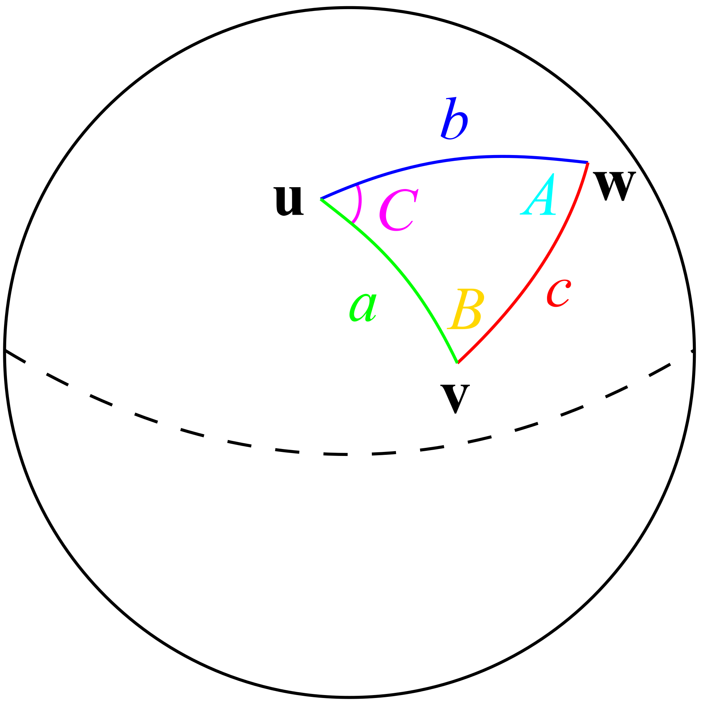

Estimating Market Size
Est-Market-Size.RmdDSPGrocery Current Operations
Estimating market size has three main components. Metro population, population, and rural population. Metro population is the number of people who live in the town the proposed grocery store will be in. This is done by by parsing the name, and then using TidyCensus to get the population. Next is the populations of the towns around where we are building the store. This is found using a buffer around the city to figure out the names of these towns. Then we use TidyCensus to find the sum of their populations. Rural population is the people who don’t live in a city, but are still in the market area. This operation finds the total population of the county, then subtracts all the people that live in the cities in that county. We then multiply this by the percentage of the area of the county covered by our market area.
The area calculations used in our functions are derived by finding the distance to the nearest store in each quadrant (NE, NW, SE, SW). We use that distance as the radius of a quarter circle to figure out how much reach the store has. This is a rudimentary way of determining the market region as the only thing it takes into account is distance to the closest store, and also ignores the radius that the other store would have. A more elegant solution to this would be Voronoi polygons or Reilly’s law of Retail Gravitation.
Code
Shaping the data
We needed several helper methods to shape the data to the way we want it. Address_Parser is a function to take an address as a string and turn it into a list.
Pop_Binder is a function that takes in an address, parses it, and then converts it into a data frame with columns for cities in the county and their populations. This is used throughout several other functions.
Our program is able to pull from the Google Places API to find the nearby stores, but it only gives us the latitude and longitude of each of the stores, not a distance, and not a direction. This function takes the data frame from the API call and figures out which direction each of the stores is in, and returns the nearest store in each quadrant. We are converting to UTM in order to filter our data frame into cardinal quadrants to find the nearest store in each direction. In order to find distance to each store, we are using something called the Haversine equation. This is a method used to find distance between two GPS coordinates while factoring in the curvature of the Earth.

Populations
Metro_Pop is a function that determines the population of the city that the potential store would be in. This function uses the parsed address to select just the city the store is out of a data frame containing the population of all the towns in the county that the store is in.
Cities_Pop is a function that finds all the nearby cities and finds
the total of their populations. This function uses a TidyCensus call to
find the population of all the cities in the state, and then filters it
down to be just the cities in our area. It then takes the sum of all the
city populations.
Rural_Pop is a function that finds the population of all people who live
in the market area but do not live in a town. This is done by finding
the population of the whole county, and subtracting the people who live
in all the towns in that area, then multiplying by the percentage of the
county the area covers.
Alternates
Voronoi
A Voronoi Polygon is a polygon defined where all points in a region would be closer to a parent node than any other nodes. This would show us a more accurate estimate of the market area because it would take the other store into account because people who live nearer to that store than our store would most likely choose to shop at that one instead.

Reilly’s Law
Reilly’s law is an economic principle that states that people are more drawn to areas with a higher population than those with smaller populations. This is an excellent way to estimate market area, but is somewhat complicated. Maps are usually edited by hand to account for geographic barriers such as rivers, and there are various limitations such as the populations of the two cities having to be relatively similar.
Huff’s Law
Huff’s law is a probabilistic model for estimating consumer attraction. It states that the attractiveness of a store and the something called distance decay determine the likelihood of someone visiting the store. Distance decay is the idea that as people move farther and farther away, the likelihood exponentially decreases that they would visit the store. In the real world this would mean that even though a store might be 10 times more attractive than another, if it is 10 times farther away, they most likely will not travel to it.